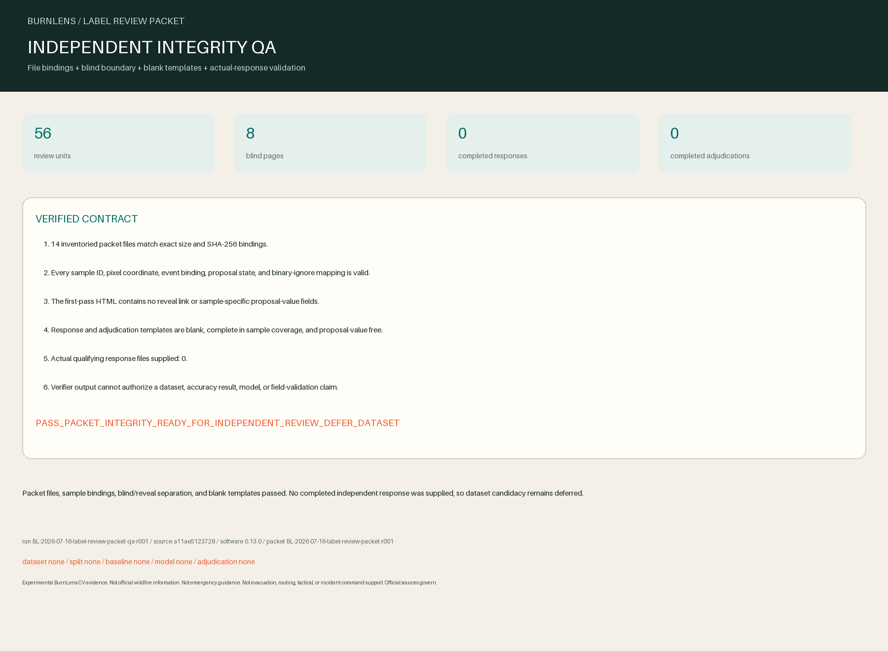

Experimental BurnLens CV evidence. Not official wildfire information. Not emergency guidance. Not evacuation, routing, tactical, or incident-command support. Official sources govern.

Decision
PASS_PACKET_INTEGRITY_READY_FOR_INDEPENDENT_REVIEW_DEFER_DATASET
Packet files, sample bindings, blind/reveal separation, and blank templates passed. No completed independent response was supplied, so dataset candidacy remains deferred.
Packet checks
14 output files; 56 unique units; 8 blind pages; blank response and adjudication templates passed.
Actual completed responses
| Opaque reviewer ID | Response SHA-256 | Units | Insufficient | Uncertain/unusable |
|---|---|---|---|---|
| No completed response supplied. | ||||
Traceability and limits
Run: BL-2026-07-16-label-review-packet-qa-r001
Git source: a11ae5123728d3823ba67d22d49250d4affb18f6
Packet SHA-256: 77067063a769645af13886b6c87cc236a10e06199d091743908d63556e07637c
Dataset / split / baseline / model: none / none / none / none
- Not proven: Packet integrity is not human label fitness, inter-rater agreement, adjudication, field validation, or accuracy.
- Not proven: No dataset, split, baseline, model, application, deployment, official status, or endorsement is established.